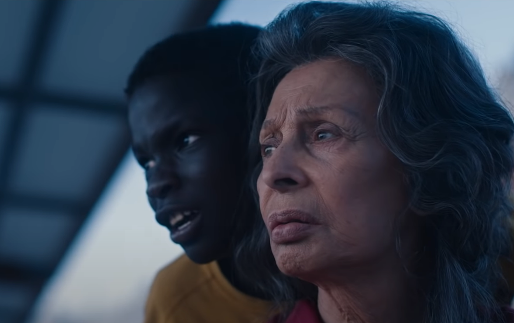
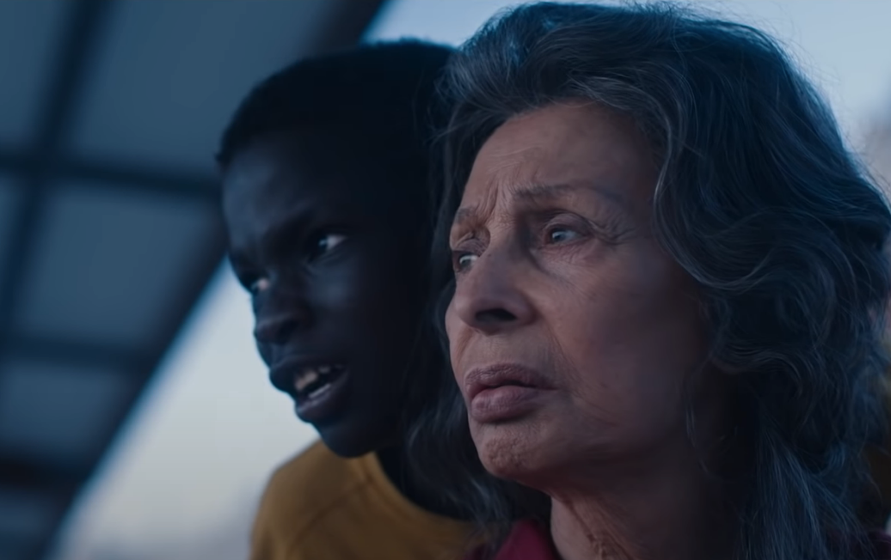

La vida ante si
La vida ante sí es una novela escrita por el autor francés Romain Gary. La historia se compone en la vida de un chico llamado Momo, el cual es huérfano y vive en un barrio muy pobre de París. La historia es narrada desde el punto de vista de Momo quien es cuidado por Madame Rosa una anciana ex prostituta del campo de concentración de Auschwitz.
A lo largo de la novela Momo describe su vida en el barrio y su relación con Madame Rosa. La historia se centra en temas como la pobreza la inmigración, la violencia y la discriminación racial.Gary retrata la relación entre Momo y Madame Rosa.
A pesar de que al principio su relación es difícil, con el tiempo se desarrolla un vínculo muy fuerte entre los dos. A través de sus conversaciones y experiencias juntos.
 

Antes de esto Momo vendía drogas para ganarse la vida y conseguir dinero para comprarse cosas que cualquier niño de su edad quisiera como por ejemplo una nueva bicicleta.Poco tiempo después la Madame Rosa le dijo a un viejo amigo llamado Sr. Hamil, un viejo sabio que guiaría por el buen camino a Momo.El Sr Hamil y Momo se vuelven muy buenos amigos después de tener varias charlas sobre cómo fue la vida de cada uno.
Momo después de pelear tantas veces con losif, momo y el se vuelven mejores amigos y cada uno hablan de como perdieron a sus madres y cuanto las extrañaron.
Tiempo después lósif y momo se vuelven como hermanos.Madame Rosa de un momento a otro su enfermedad esta empeorando, hasta que un dia empeoro bastante y un dia le da uno de sus ataques, tanto que tuvieron que llamar a su doctor. Después de esto la madres pérdida de lósif regresa a la casa y se lleva a lósif con el, momo llora por que lo va a extrañar.
Poco tiempo después la Madame Rosa muere y se la llevan, Momo ya no tenía ganas de vivir y llora mucho.Momo pensó en lo que hubiera querido la Madame Rosa y decidió dejar la droga y Empezó a recordar las cosas que le decía la Madame Rosa sobre la vida.
Conclusion y soluciones
Momo era un niño huérfano con bajos recursos lo cual decidió tomar el riesgo de vender productos ilegales para ganar dinero.Y a lo largo de su camino se encuentra personas buenas y bondadosas que lo guiaran al buen camino.Es una historia muy bondadosa y que enseña mucho.Con todo lo que pasó en la historia podemos aprender que la vida es un camino lleno de desafíos pero también de oportunidades y esperanza.
Soluciones:
1-Que aumenten las posibilidades de trabajos para menores de edad.
2-Que no tengan tanta inflacion asi las cosas cuestan menos
3-Que el gobierno tenga un orfanato mejor para los niños.
4-Que en los orfanatos a partir de cierta edad dejen ir a los niños a la escuela.
5-Que cuesten menos las universidades
Como se relaciona con la hambruna
La hambruna se relaciona con esta película de distintas formas, por ejemplo algunas personas usan métodos no adecuados para hacer dinero ya que no tienen forma de conseguir un trabajo o de mantenerse; también se relacionan porque la mayoría del mundo está pasando por lo que están pasando las personas de la película.
La única forma de lo que algunos pueden hacer dinero lamentablemente es emigrando a otros lugares con mejor situación económica